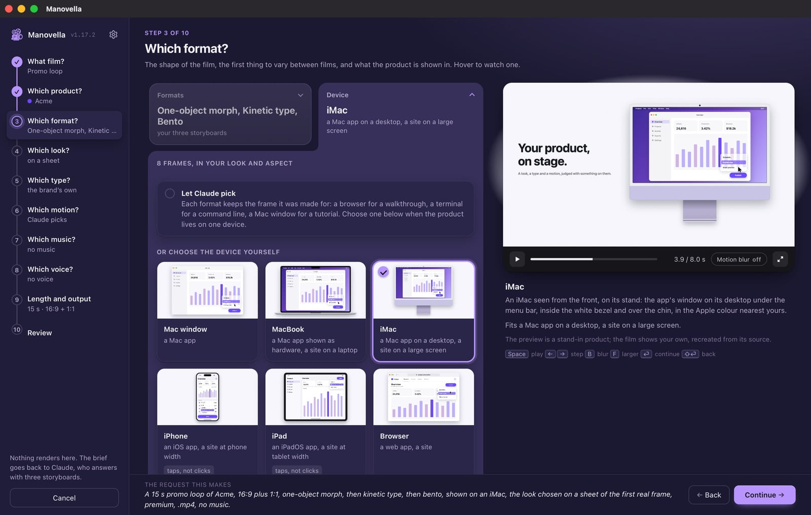

Guide
The Studio
Ten steps from a recipe to a brief, every choice shown moving on the real engine and the sound heard, ending in a brief that Claude answers with storyboards.
Run /manovella:studio, or the skill with no argument; in Codex or Copilot CLI, ask for Manovella’s Studio. The Studio opens a window of its own: ten steps from a recipe to a brief, where the recipes, formats, looks, your pictures, the type and the motion are shown moving on the real engine, in the product’s colour and the film’s aspect, and the sound is heard. Each step is a deck of cards, each saying at a glance what is chosen in it: one opens at a time, its controls in a panel under its row, and with all of them closed the step is an overview of its choices. The window is dark, in Manovella’s violet whatever the product. It ends with brief.json in the film’s work folder, the picture, the fonts and the track it needs beside it, and hands it back to the agent that opened it, which answers with the storyboards. Nothing is installed and nothing renders.

The ten steps
| Step | What you choose |
|---|---|
| What film? | A recipe: promo loop, social teaser, film in chapters, release film, README GIF, tutorial, or from scratch. Each is shown as its own template, playing. |
| Which product? | A repository among the workspace’s siblings (or the project folders you set; the step says where its list comes from, with Change folders… and Choose a repository… for one outside them), or a website URL; the version for a release; the name. The Studio reads its homepage, latest tag and film kit, and guesses its accent from the source (the kit’s last film, an Xcode AccentColor, a manifest’s theme_color, a --brand variable). |
| Which format? | Two cards. Formats: up to three of the eleven, or Claude’s pick of three; the reel’s scenes play on hover, in your colour and look. Device: what the product is shown in, whatever the format: a Mac window, a MacBook, an iMac, an iPhone, an iPad, a browser, a terminal, or Just the UI (the product’s interface on its own, with no window and no device round it). Each is a tile of the stand-in product in that device, laid out as the device has it and tapped where it is touched; left to Claude, each format keeps its own. A release film and a tutorial have one format, and still choose their device: see The device. |
| Which look? | One of the twenty-three, or a picture from your Mac with its blur, treatment and a Ken Burns drift; the palette scheme. Three cards: Looks, Your picture (dropped or chosen first, then the most recent ones in ~/Pictures or the picture folders you add in Settings) and Palette, once there is a colour to derive one from. Every look is rendered on a stand-in product, in your colour and aspect, and in the device chosen. |
| Which type? | A type set from the kit, any family from the kit or installed on this Mac and its weight, or the brand’s own. |
| Which motion? | How headlines arrive (thirteen styles), an emphasis on one word, the family of cuts (twenty-four, by what they do to the frame), the pace and the motion blur’s shutter. |
| Which music? | A track of your music library, a file of yours, a prompt for Gemini to make a new one, a metronome, or none: see Sound. Each track is played, with its length and tempo measured. |
| Which voice? | A preset (Promo, Launch, Narrator, Conversational, Recap, Lesson: a voice and its reading at once), or every setting by hand; what it says, the subtitles, and how far under it the music sits: see Voice-over. Five cards (Preset, Who speaks, How it reads, Lines and subtitles, With the music) under a Hear it strip that stays at the top of the step: whichever card is open, the voice chosen says the line you type there, over the music chosen as the film will mix it, or alone. |
| Length and output | Length (one of the film’s own, any other typed under Custom, or as long as its voice for a film that speaks), aspects, tone, fps, resolution, files, a reference to take after and notes; for a tutorial, what it teaches. A rough render time is shown. |
| Review | The brief, each line editable, and the one-line request that would have said it all. |
The device
The second card of Which format? chooses what the product is shown in. It holds for every scene that shows the product, whatever the format, and for a release film and a tutorial too.
| Device | What the film shows |
|---|---|
| Claude picks | Each format keeps the frame it was made for: a browser for a walkthrough, a terminal for a command line, a Mac window for a tutorial. The default. |
| Mac window | The app in its own macOS window. |
| MacBook | A MacBook Pro seen from the front, the app’s window on its desktop. |
| iMac | An iMac seen from the front, on its stand: the app’s window on its desktop, inside the white bezel and over the chin, in the Apple colour nearest your accent. |
| iPhone | An iPhone, the product in its phone layout. A tap is a touch, never the macOS pointer. |
| iPad | An iPad Pro, lying down where the frame is wide and upright where it is tall. A tap is a touch. |
| Browser | A browser window, the product as the web page it is. |
| Terminal | A terminal window: commands typed, output streaming, no pointer. |
| Just the UI | The product’s interface on its own: a floating panel with rounded corners and a shadow, no window and no device round it. The product is still on screen; a film of words alone is the Kinetic type format. |
The tiles show a stand-in product, laid out again for each device. The film shows yours, and keeps it honest: an iPhone or an iPad holds the layout your product really has there, an iOS app’s screens or a responsive site at that width. Where it has none, Claude says so before the storyboards and proposes the nearest honest frame; a desktop interface is never squeezed into a phone. In Devices in 3D, the one format that shows several, the device you chose leads the cover-flow. The brief carries the choice as frame.

What the previews are
- The engine’s own pages, played by calling their
seek(t). A look seen here is the look the renderer draws. One page plays at a time, at 60 fps when a frame is cheap and 30 when it is not; a new one cross-fades in over the last, and a paused one is not drawn again. - A hover is a look, not a choice. The tile under the pointer plays, and the viewer goes back to the choice when the pointer leaves.
- Motion blur in the viewer’s bar paints each frame as the mean of up to five moments, the way the render blends its sixteen: the way to judge a fast move.
- Pictures are converted once, with
sipson a Mac (HEIC included) and ffmpeg elsewhere, to a JPEG of at most 3840 px in Manovella’s cache folder, and the chosen one is copied into the work folder. The brief records where the picture came from: a wallpaper pack’s licence is often personal use only.
Settings
The gear beside the logo at the top of the sidebar, or Settings… (⌘,) in the app menu of Manovella.app, opens the Settings window: a sidebar with About Manovella at its head and four panes, Projects, Pictures, Music library and Work folder. A change is saved at once, in settings.json; see Settings. The music step’s library line names its folder, with Change….
Keys and the window
The window keeps Manovella’s violet whatever the product: the product’s colour is in the previews, and beside its name in the steps. The viewer scrubs by dragging. From the keyboard: Space plays, ← → step, B is the motion blur, F a larger preview, Enter continues and Shift+Enter goes back. Going back keeps every choice, and so does choosing another recipe, for the ones made by hand. When Continue is off, the page says what it waits for. The window works down to 900 × 600, its sidebar reduced to the steps’ numbers.
The Studio remembers the last brief, per product, in Manovella’s settings folder: Like last time starts from it.
Running it by hand
From a workspace, node studio/studio.mjs in the skill’s folder. It prints STUDIO <url>, then one of BRIEF <path>, CANCELLED, CLOSED or TIMEOUT, and exits. Options:
--no-open: print the URL only.--roots <dir>,…: where the repositories are. Without it, the project folders in Settings, else the parent of the repository the command runs in;MANOVELLA_ROOTSdoes the same.--product <path>: preselect a product.--out <dir>: where the work folder goes (default: the Work folder in Settings,~/Downloadsunless changed); it wins over Settings for that run.--agent claude|codex|copilot|gemini: who the brief goes back to. The Studio names that agent, and its last screen gives that agent’s command.--detach: the Studio goes on in a process of its own, and this one printsSTUDIO <url>andSTATE <file>and exits.node studio/studio.mjs --wait <file>then prints the Studio’s line when it ends, orWAITINGafter--forseconds (240 by default), to be run again. It is for an agent that the end of a background command does not wake.
The window is the Studio’s own app, ~/Applications/Manovella.app, where it has been built (see Getting started): its name, version and icon in the Dock instead of one more Google Chrome. Otherwise, or with MANOVELLA_WINDOW=chrome, a Chrome app window on a profile of its own. Either way it closes with the Studio. Off a Mac it is a Chrome app window (Chromium on Linux where there is no Chrome), else the default browser; on a Linux machine without a display, only the address is printed.